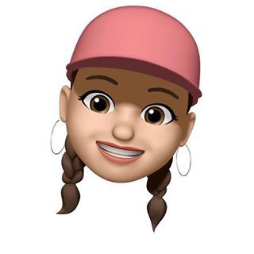

Kardelen'in bloğuna hoşgeldiniz

Ben Ömer Matlı İlk okulun'dan mezun olduktan sonra, Karacabey Orta Okulunda okumaya başladım.Sınav sonrası Bursa-Karacabey İMKB Mesleki ve Teknik Anadolu Lisesinde okumaya başladım.Üniversite sınavına girerek Afyonkarahisar Sandıklı Meslek Yüksek Okulu Bilgisayar Programcılığı bölümünü kazandım. Hedefim bu yıl sınava girip 4 yıllık yazılım mühendisliğini kazanmak.